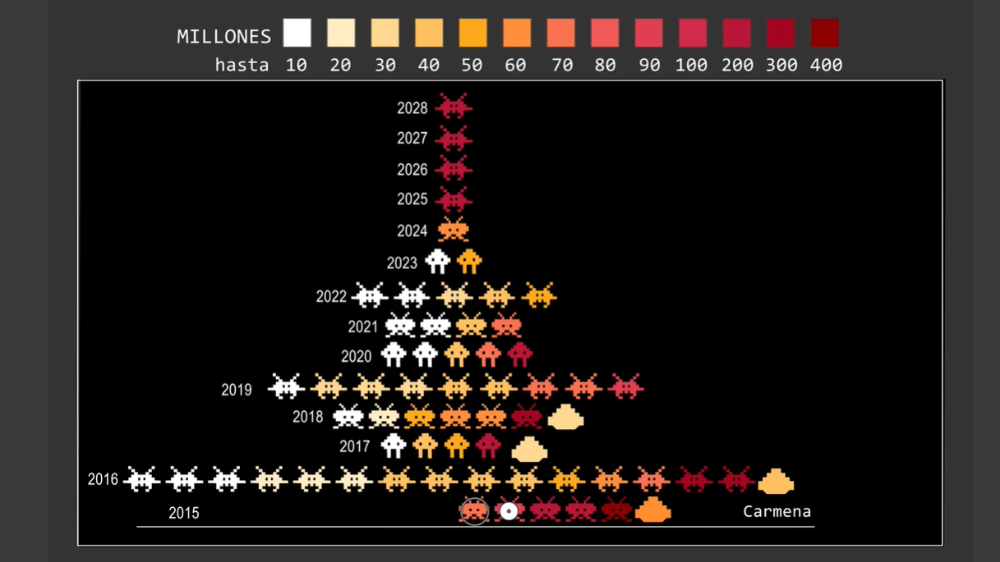
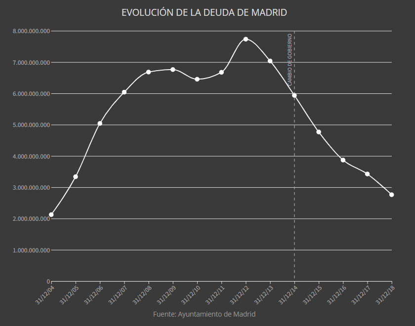

Sobre esta web
Este es el trabajo final de Beatriz Alonso Casares para la asignatura de Periodismo de Datos II. En él recopilo las actividades propuestas durante la asignatura en una web que he personalizado. Para ellos, los contenidos que tenía en Markdown los he convertido en HTML5 usado Pandoc.
Una vez traducido todo el contenido a HTML5 he seleccionado una plantilla de Bootstrap y he customizado en index.html y la hoja de estilos style.css. Dentro de los principales cambios he creado una malla en css3 para ayudarme a dar forma a la web, luego he construido una cabecera con mi nombre y el título de la asignatura.
Para modificar la plantilla he utilizado la herramienta de edición open source Brackets. Desde los primeros cambios en el html como cambiar el lenguaje a español, cambiar en el head el título, el favicon añadir a url de Google Fonts de las fuentes que he usado que son Noto Sanz, Oswal, Lato y Montserrat.
Además he incrustado imágenes y gráficas, personalizado los tamaños, los márgenes y otros detalles para que encajen en la web. Dentro de la experiencia de usuario he creado un menú con las 4 actividades y lo he enlazado a su lugar en la web para que se pueda navegar por ella de una manera más sencilla.
Por último, he subido esta web a Github junto con el resto de trabajos de la asignatura de Periodismo de Datos II.
Comparación de visualizaciones 2021
Estas son algunas de las que considero las visualizaciones más representativas del 2021. En las siguientes líneas he seleccionado cuatro visualizaciones de datos de algunos de los temas con de los que más se ha hablado en este periodo: la pandemia del COVID-19, la erupción del volcán de La Palma, la subida de la luz y la crisis medioambiental.
Dashboard sobre COVID-19 de la de la Universidad Johns Hopkins
Para el primer caso, he seleccionado en Dashboard sobre el COVID-19 de la Universidad Johns Hopkins que recoge a nivel global los datos de contagios, muertes y vacunación del COVID-19. Se pueden ver los datos totales, también los de la última semana y los de los últimos 28 días. Además, están desglosados por país y ampliando en el mapa se pueden ver con más detalle regiones específicas en cada estado. Por ejemplo, en el caso de España se pueden observar los datos por Comunidades Autónomas de incidencia, aunque la vacunación sólo está recopilada la cifra a nivel de país.
El punto fuerte de esta visualización es la base de datos que hay detrás de ella, su constante actualización y que permite una visión global de la evolución de la pandemia. Por la contra, entre los puntos débiles estaría que funciona de forma muy lenta, y que no entra en detalles de contexto, fuentes o metodología.
La erupción de volcán de La Palma en El País
En contraste con la visualización de datos anterior, para ilustrar el volcán de La Plana he elegido el Mapa casa a casa del avance de la lava: el volcán de La Palma ha arrasado ya 1.973 edificios por valor de 239 millones en la que se ve el avance de la lava en un mapa interactivo con mucha calidad de detalle, e incluso con una ficha de cada casa arrasada.
Esta visualización es detallada y fácil de comprender gracias al mapa y a su simbología explicada en una leyenda arriba de este. Además, las infografías que acompañan el artículo aportan de manera sencilla y visual datos relevantes de la situación actual en La Palma, como el número de hectáreas arrasadas o los edificios destruidos. Asimismo, otro de los puntos fuertes de este artículo es que explica las fuentes y la metodología empleada al final del mismo.
Evolución de la luz en Europa Press Data
La agencia de noticias Europa Press tiene una parte de datos en la que comparte visualización y gráficos que sirven para ilustrar de manera visual temas de actualidad. En este caso he seleccionado dentro de la sección Precio de la factura de la luz, datos y estadísticas el grafíco sobre La evolución del precio de la luz en Europa.
Se trata de un gráfico de barras en él se ven los precios medios mensuales de la luz de los mercados de algunos países europeos. Es una visualización dinámica en la que se ve el periodo de abril 2020 a septiembre de 2021, mes a mes.
En este gráfico se observa cómo varía el precio y cómo fluctúa el orden de países, aunque sube el precio en todos, no lo hace la misma cantidad ni de la misma manera. En abril de 2020, el país con la luz más cara es Reino Unido (27,59 euros) y con la más barata Francia (13,45 euros). Ese mes, España estaba en el quinto lugar (17, 65 euros). Como se observa en la visualización los precios van subiendo hasta que, en septiembre del 2021, que, en Reino Unido, que continúa en primer lugar alcanza los 222,02 euros y en Alemania, este periodo con la energía más barata el precio medio es de (126,81 euros). En España, esta vez en cuatro lugares el precio es de 156,14 euros.
Además, también se observa como los precios fluctúan con tendencia a subir, pero en mayo del 2021 que suben de forma muy acusada. Otro de los puntos fuertes de esta visualización es que está presente y de manera visible cuándo fue la última

El mapa de las macrogranjas de porcino en España de Datadista
Sobre el cambio climático y el calentamiento global también podemos encontrar multitud de visualizaciones en los medios, con mayor o menor acierto. He escogido esta de Datatista [El mapa de las macrogranjas de porcino en España] (https://especiales.datadista.com/medioambiente/espana-intensiva/mapa/#1) sobre las explotaciones de ganadería intensiva porque me parece que de manera muy visual, en un mapa customizado con cerdos hace una visualización sencilla de las explotaciones y las emisiones de metanol y amoniaco que produjo cada granja en el año 2019.
'En deuda con Gallardón'
Justificación
La visualización que he escogido es un artículo especial de **Datadista llamado “En deuda con Gallardón”. He seleccionado este ejemplo porque trata la evolución de la deuda que adquirió la ciudad de Madrid durante el mandato de Gallardón, que en apariencia es un tema bastante denso, en forma de videojuego. Este diseño hace que resulte atractivo visualmente y atraiga la atracción del del lector.
Análisis
Conveniencia de la URL
La URL es correcta, usa guiones para separar las palabras y evita los símbolos. Además, está presente el nombre del medio, la sección y el título del reportaje. Para mejorarla quizás habría optado por no poner el título del artículo, solo las palabras clave que tienen sentido por sí mismas dejando: https://especiales.datadista.com/madrid/ .
Título del artículo
El nombre ‘En deuda con Gallardón' es un juego de palabras que significan lo contrario que realmente dice el artículo. De tal manera que la expresión `estar en deuda con alguien’ es deberle algo a esa persona, pero en este caso el artículo explica cómo Gallardón endeudo Madrid por encima de lo permitido por la Unión Europea y los métodos fraudulentos que usó.
Estructura del contenido del artículo
El reportaje está dividido en párrafos y ladrillos, con gráficos y vídeos intercalando la información para hacerla más dinámica. Por otra parte, podemos considerar que en este especial se manejan cifras y conceptos para los que se necesitan conocimientos económicos, de no tenerlos se necesitaría un glosario de apoyo o contenidos complementarios.

Adecuación a la estructura de la web
La página web al ser una especial de un medio tiene una estructura específica para dicho reportaje, en la que según se va avanzando por el documento haciendo scroll, se va moviendo la nave de la derecha de la pantalla.
Diseño de la web
Este diseño en gris claro sobre gris oscuro salpicado de rojos y naranjas simula un videojuego antiguo. En el texto la letra es gris claro y, lo que en otros artículos sería negrita es una especie de subrayado dorado.
Usabilidad de la web
El contraste del color de la letra con el fondo de la página es aceptable pero mejorable. Lo considero aceptable porque la fuente es legible y el tamaño grande, lo que resulta accesible. Para navegar por la web únicamente hay que hacer scroll y pulsar los videos o las infografías.
Validación según los estándares de la Web
Esta web está validada en los siguientes estándares: W3C CSS, W3C Deprecated Features, W3C HTML y HTML5.
Uso de tipografías
El cuerpo del texto es Arial tamaño 13pt y los títulos de los diferentes apartados, además de estar en mayúsculas, tienen un tamaño de 21 pt haciendo que destaquen.
Elementos de composición
El artículo como ya he mencionado anteriormente está compuesto por vídeo inicial, texto, varios gráficos y otros vídeos. De esos gráficos, aunque uno es animado, solo hay uno que sea interactivo, que es la visualización elegida para la actividad.
Herramienta elegida
La herramienta utilizada es Flourish. Para saberlo, aunque no lo refleja la web, se puede comprobar en el código.

Uso de colores
La estética de la visualización va en concordancia con la web. El fondo es de un gris oscuro y los números de los ejes son gris más claro. La línea de puntos es blanca al igual que los puntos en sí.
Tipo de visualización
Se trata de un gráfico de línea donde el eje vertical es el dinero de la deuda en euros y en el horizontal las fechas. Este es uno de los principales fallos del gráfico: no nombra los ejes y tampoco las unidades. Se sobreentiende leyendo el artículo que son euros, pero no vendría mal que lo reflejara.
Creación de una visualización del proyecto TRESCA
Gráfico de líneas
Para la visualización de estos datos he escogido un gráfico de líneas, en el que cada político estadounidense se representa con una línea y un color. En el eje horizontal he representado las fechas y en el vertical el volumen de tuits. Para hacer esta representación he tenido que realizar varias modificaciones previas en los datos.
Limpieza de los datos
Los principales cambios que he realizado en Open Refine han sido el cambio el nombre de las columnas y, posteriormente, he dividido la fecha en dos columnas creando una así una independiente para la hora. Por último, he creado una nueva columna en la que he clasificado los políticos según su partido.
Para la organización de políticos por fecha y cantidad de tuits he realizado una tabla dinámica en excel en las filas son las fechas y las columnas los cuatro políticos. Los valores que he sumado son los tuits. De esta forma, los datos están agrupados mostrando en cada fecha la cantidad de tuits en los que se mencionó a cada político.
Siniestralidad en las carreteras europeas
Muertes en accidente de tráfico por millón de habitantes en la Unión Europea en 2020
En este mapa podemos ver las cifras oficiales de fallecidos en las carreteras, en 2020, en la Unión Europea, según los datos de la Comisión Europea. Las víctimas en este tipo de accidentes ascienden a 18.000 personas. Según la entidad, el menor volumen de tráfico como consecuencia de la pandemia sanitaria ha tenido un impacto directo en esta bajada de la siniestralidad vial que se ha producido respecto a 2019.
España es el cuarto país que tuvo menos accidentes, en el año 2020, de la Unión Europea. puesto que en ese periodo se contabilizaron 29 accidentes por cada millón de habitantes. Cerca de Suecia, el país con menos accidentes en el 2020, donde se produjeron 25 accidentes por millón de habitantes, quitándole el título a Islandia, país con menos accidentes en el año anterior. Un año más, el que más accidentes ha tenido ha sido Rumania, 117 por millón de habitantes.
Realización de la visualización
Para realizar esta visualización he descargado los datos en csv de la web de la Comisión Europea utilizando la herramienta Table Capture.
Posteriormente, los he subido a Open Refine y he renombrado las columnas. El siguiente paso que he seguido ha sido realizar varias comprobaciones y comprobar que los datos medios de los países coincidían con la cifra total de la Unión Europea. Efectivamente, así es en 2020. En 2019 no coincidían, lo que imagino será porque en ese periodo estarán contabilizados los datos de Reino Unido.
Por último, he realizado la representación de los datos en una visualización, seleccionando la opción de mapa en Datawrapper. Me he decantado por un mapa coroplético en el que se reflejan las víctimas mortales en accidentes de tráfico por millón de habitantes en la Unión Europea en 2020.
Para una correcta visualización de los datos los he modificado en el formato predeterminado que requiere la web, por ello, me ha tocado cambiar el nombre de los países. Luego he modificado la leyenda, he incluido la escala y he añadido la unidad (víctimas mortales por millón de habitantes). Para finalizar, he decidido dejar visible el dato de fallecidos (un número de dos cifras) para reforzar la información de la escala de colores.